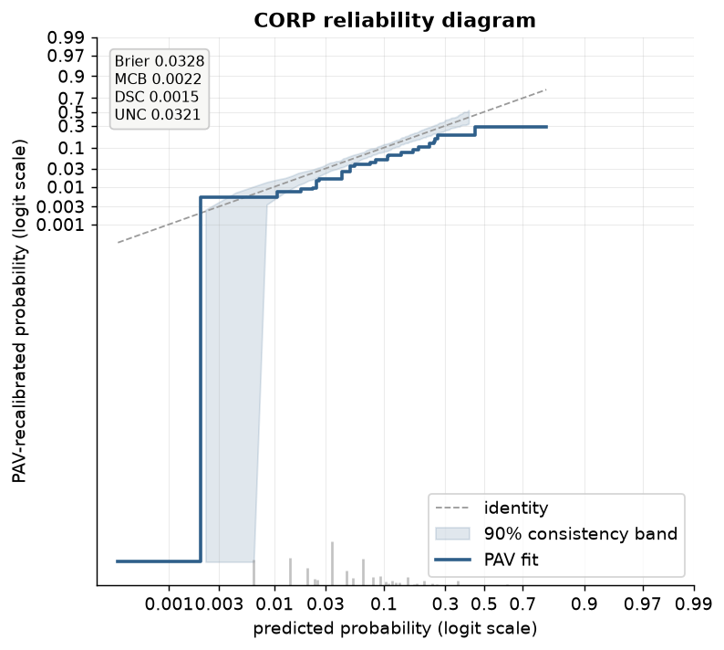
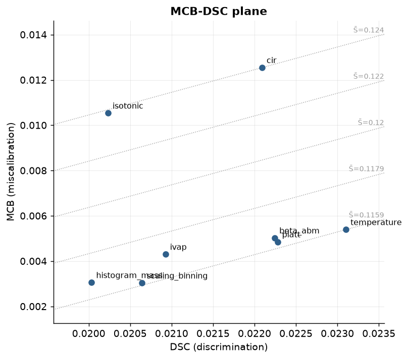

CORP and score decomposition¶
CORP (consistent, optimally binned, reproducible) is the reliability diagram of
Dimitriadis, Gneiting and Jordan (2021): the isotonic (pool-adjacent-violators, PAV)
recalibration map of y on p, and nothing else. It is consistent because a
miscalibrated forecaster cannot make the diagram look better than it is; optimally
binned because the block structure comes from the data (PAV) rather than a bin-count
choice a validator has to defend; and reproducible because two people with the same
(y, p) get the exact same step function, with no smoothing bandwidth or bin-edge
convention to disagree about. probcal.curves.corp_reliability computes it,
probcal.plots.plot_corp draws it, and both stand alongside the binned and smooth
reliability constructions described in Visualization rather than
replacing them. CORP is the discretization-free option when the diagram itself, not just
a bandwidth-tuned overlay, needs to be defensible.
The PAV fit¶
corp_reliability(y, p, bands="consistency") sorts p, pools tied scores
(isotonic._aggregate_ties), and runs weighted PAVA (_math.pava) on the pooled
event rate: this is ordinary least-squares isotonic regression, min sum w_i (y_i -
m_i)^2 subject to m non-decreasing, solved in amortized O(n) by the standard
pool-and-merge sweep, with no partition search and no cross-validated bin count. The result
is a step function: each PAV block covers a [block_lo, block_hi] range of p at one fitted
level block_level, with block_weight giving each block's pooled sample weight.
plot_corp draws that step against the identity, with grey ticks below the axis sized by
each block's weight share so a reader can see which parts of the fit rest on how much data.

The MCB-DSC-UNC decomposition¶
Every proper score decomposes into three terms, and CORP computes this decomposition for both the Brier score and log loss, since the same PAV fit drives both:
- UNC (uncertainty): the score of the constant forecast
p = ybar, the ceiling a forecaster cannot do worse than if all it knows is the base rate. - DSC (discrimination): how much the PAV fit improves on that constant forecast, the resolution the recalibrated predictions actually carry.
- MCB (miscalibration): how much the raw score falls short of the PAV fit's score, the part of the raw score attributable purely to being poorly calibrated, since the PAV fit is by construction calibrated on this sample.
They satisfy score == mcb - dsc + unc exactly, to floating-point precision, by
construction (_corp.decompose computes all three from the same three mean-score
evaluations, at p, at the PAV fit, and at the constant ybar, so the identity is
algebraic, not approximate). plot_corp(show_decomposition=True) (the default) prints all
four numbers (score, MCB, DSC, UNC) in a stats box on the diagram itself.
Two numeric conventions apply throughout:
- Log-loss clip
1e-12. A PAV block can land at an exact event rate of 0 or 1 (a block with no events, or all events), which puts alog(0)term into the log-loss score: a legitimate infinite penalty mathematically, but unusable in floating point._corp._CLIP = 1e-12clips both the raw predictions and the PAV levels to[1e-12, 1 - 1e-12]before taking logarithms, the same clip used everywhere else in the package (_math.logit's_LOGIT_CLIP), so log-loss decomposition stays finite at degenerate blocks instead of raising or returninginf. - Weighted PAVA. Sample weights are pooled through both stages: tied scores are
aggregated first (
isotonic._aggregate_ties, weight-summing duplicatepvalues into one point with a weighted meany), then_math.pavaruns its weighted merge sweep on the aggregated points. An unweighted call is exactly thew = 1special case; there is no separate unweighted code path to drift out of sync.
Bands: pointwise, not uniform¶
corp_reliability(bands=...) resamples the fit to put an uncertainty band around the PAV
step, in two flavors:
"consistency"(the default) resamplesy_b ~ Bernoulli(p)under the null thatpis already calibrated: "if this forecaster were perfectly calibrated, how much would its PAV fit wobble by chance alone?" This is the band to read against the identity: it answers whether the observed deviation from the diagonal could be resampling noise under perfect calibration."confidence"instead bootstraps(y, p, sample_weight)triples with replacement: "given this data, how much would the PAV fit wobble under resampling?" This is the band to read against the fit itself: it answers how precisely the fitted curve is pinned down, independent of whether it happens to sit on the diagonal.
Both bands are built the same way (_corp.corp_bands): resample n_resamples times, refit
PAV on a shared 201-point grid spanning the 0.5th to 99.5th percentile of p
(_corp.eval_step evaluates the step fit at arbitrary grid points), and take the pointwise
central level quantile interval across resamples at each grid point independently.
That last clause is the reason coverage is stated pointwise, not uniform: at any one
grid point, a nominal 90% band contains the true fit's value roughly 90% of the time across
repeated experiments. It does not follow that the whole curve stays inside its band 90%
of the time: with 201 (correlated, but not perfectly correlated) grid points, the chance
that at least one of them strays outside a 90%-pointwise band on a given draw is
substantially higher than 10%. A validator reading "the fit exits the band somewhere in the
tail" should not conclude "reject calibration at the 90% level" from a pointwise band the
way a simultaneous (uniform) band would license; that is a materially stronger claim this
construction does not make. docs/scripts/corp_sim.py quantifies the gap directly by
drawing repeated consistency-band experiments and checking, per draw, both whether the
average grid point (pointwise) and whether every grid point (uniform) landed inside;
the table below reports both.
The MCB-DSC plane and selector columns¶
A single number per candidate, Brier or log loss, hides why one calibrator beats
another: it could discriminate better, or simply be better calibrated, or trade one for the
other. plot_mcb_dsc plots each candidate at (DSC, MCB) instead, with dashed iso-score
diagonals MCB = DSC + (S̄ - UNC) traced for five score values spanning the candidates'
range. Candidates on the same diagonal tie on the aggregate score despite sitting at
different points of the discrimination/miscalibration trade-off. Lower-right is strictly
better: the same or more discrimination for the same or less miscalibration.

plot_mcb_dsc accepts either a {name: (y, p)} mapping, where each entry's CORP
decomposition is computed fresh and every entry's y must share the same weighted mean so
that UNC (and therefore the diagonals) is comparable across candidates, or, directly, a
fitted CalibratorSelector's report_. As of probcal 0.3, SelectionReport carries mcb,
dsc and unc columns alongside the existing score_mean/score_sd/guardrails_ok: one
corp_fit/decompose call per candidate on its own out-of-fold predictions, decomposing
Brier when the selection criterion is Brier and log loss otherwise (matching whichever
score actually drove the ranking). A report loaded from before 0.3 (e.g. an old golden)
has mcb=dsc=unc=None, and plot_mcb_dsc raises rather than plotting a plane with columns
that were never computed.
Coverage simulation¶
tests/test_corp_sim.py (pytest.mark.slow) enforces pointwise coverage >= 0.85 at
level 0.9 in CI, at a reduced size (n=1000, 60 runs, 100 resamples per band) to stay fast
enough for the ordinary test suite. The table below is the full-size version: 500 runs per
cell, over both problem sizes and both nominal levels the package advertises, produced by
docs/scripts/corp_sim.py and pasted here verbatim:
| n | level | pointwise coverage | uniform coverage | gate |
|---|---|---|---|---|
| 1000 | 0.8 | 0.7954 | 0.0000 | pointwise >= 0.75 |
| 1000 | 0.9 | 0.8899 | 0.0100 | pointwise >= 0.85 |
| 5000 | 0.8 | 0.7915 | 0.0000 | pointwise >= 0.75 |
| 5000 | 0.9 | 0.8873 | 0.0040 | pointwise >= 0.85 |
Pointwise coverage tracks its nominal level closely at both sample sizes and both levels
(0.7954/0.8899 at n=1000, 0.7915/0.8873 at n=5000, against nominal 0.8/0.9): at any one
grid point, the band contains the true PAV fit about as often as advertised. Uniform
coverage, the fraction of the 500 runs where every one of the 201 grid points landed
inside its band simultaneously, is near zero at every cell (0.0000/0.0100 at n=1000,
0.0000/0.0040 at n=5000): with 201 correlated-but-not-identical grid points, the chance
that at least one of them strays outside a 90%-pointwise band on a given draw is far higher
than 10%, so a run essentially always has at least one excursion somewhere along the curve.
This is the gap the Bands section above predicts, and it is the reason the package's
guarantee, the CI gate, and this table all state coverage pointwise: the shaded ribbon in
plot_corp is a pointwise envelope, not a simultaneous one, and a reader who needs "the
whole curve stays inside its band level of the time" should not read the ribbon as
answering that question; nothing in this release does.
In probcal¶
from probcal import make_pd_portfolio
from probcal.curves import corp_reliability
from probcal.plots import plot_corp, plot_mcb_dsc
from probcal.selection import CalibratorSelector
port = make_pd_portfolio(n=5000, random_state=0)
y, p = port.y, port.scores
result = corp_reliability(y, p, bands="consistency", level=0.9)
print(result.brier, result.brier_mcb, result.brier_dsc, result.brier_unc)
ax = plot_corp(result, scale="logit")
sel = CalibratorSelector(cv=4, random_state=42).fit(p, y)
ax = plot_mcb_dsc(sel.report_) # mcb/dsc/unc columns, probcal >= 0.3
ax = plot_mcb_dsc({"raw": (y, p), "recalibrated": (y, sel.predict_proba(p))})
References¶
- Dimitriadis, T., Gneiting, T., Jordan, A. I. (2021). "Stable reliability diagrams for probabilistic classifiers." Proceedings of the National Academy of Sciences 118(8), e2016191118.